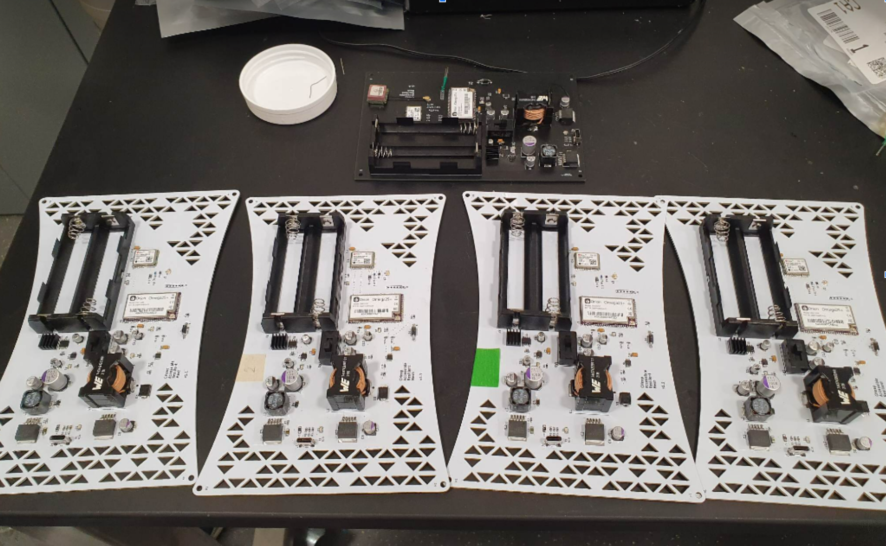
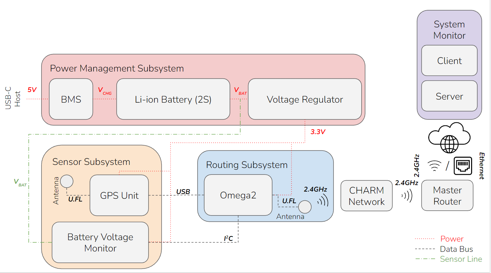
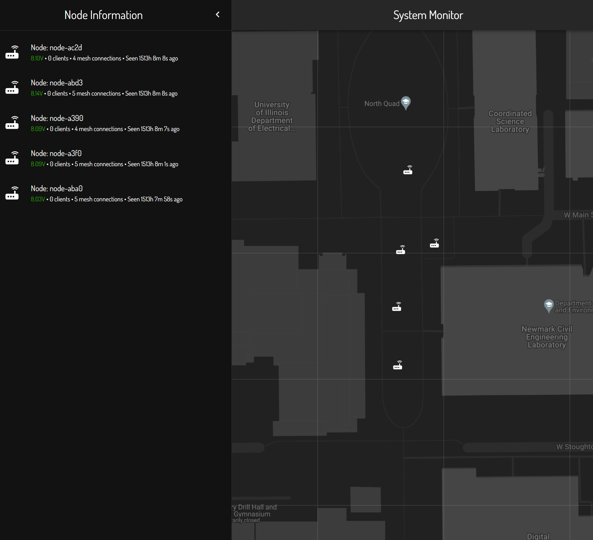
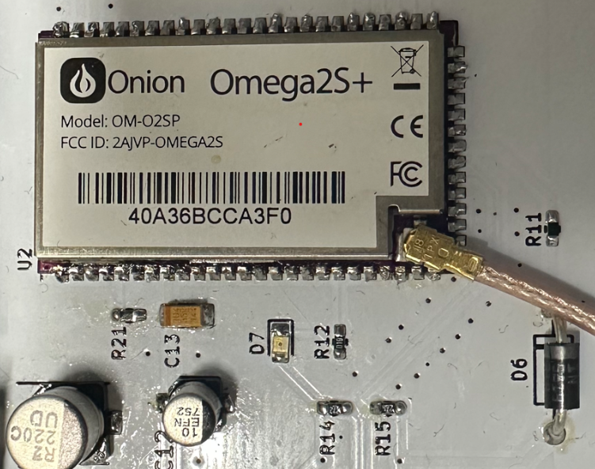

CHeap Accessible Resilient Mesh.
This was our project for Senior Design (ECE 445) at the University of Illinois. We were tasked with finding and developing a solution for any problem that may be solved with a combination of hardware design and software.
There are a variety of situations in which people have limited cellular or internet connectivity. For example, a natural disaster may wipe out cell towers, leaving victims without a means of contacting rescuers or loved ones. Our system aims to be a lightweight, cheap, and quickly deployable solution to this problem. Emergency responders can spread CHARM nodes across a large area, at which point the nodes connect to one another and create a large WiFi network which may then be used by victims and responders.

CHARM Nodes. v1.0 top, v1.1 bottom.
Our project fulfilled high level requirements defined in the first weeks of the course.
Our design was split into 4 subsystems. The Power Management Subsystem is responsible for charging the 2 Li-ion batteries, and providing 3.3V from the batteries to the sensors and microcomputer in the other two on-board subsystems. The Sensor Subsystem provides GPS and battery voltage data to the on-board microcomputer. The Routing Subsystem is host to the on-board microcomputer, which was responsible for routing network traffic, as well as sending the node’s sensor data to the System Monitor, a web interface for used for monitoring all the nodes in the network.

Block Diagram
I was responsible for the System Monitor and Routing Subsystems, and thus will only cover these systems in greater detail.
The System Monitor is a full-stack web application that displays the location and status of every node. I wrote the backend in Node.js, including methods to save and retrieve node data. I wrote the frontend using React.js and the Google Maps API to visualize the location and status of each node.

System Monitor Frontend
The Routing Subsystem is comprised of the Omega2S+ and a few passive components. The Omega2S+ runs processes to route traffic in the mesh, as well as send telemetry about the node state to the System Monitor.
As shown in the Block Diagram, the routing subsystem serves as the center of our design. It takes in data from the GPS Unit and Battery Voltage Monitor via USB and \(I^2C\), respectively, while also receiving and sending network traffic via 2.4 Ghz U.FL antenna. It is powered by the Power Management Subsystem with 3.3 V (±0.1V).
This subsystem is responsible for providing WiFi (High-Level Requirement 1) and sending telemetry from the sensors (High-Level Requirement 3).

Routing System Hardware
Our project worked, satisfying all of our requirements!
If you would like to read more about this project, check out the GitHub repo and the UIUC project page. These contain the project source and detailed documentation, respectively.